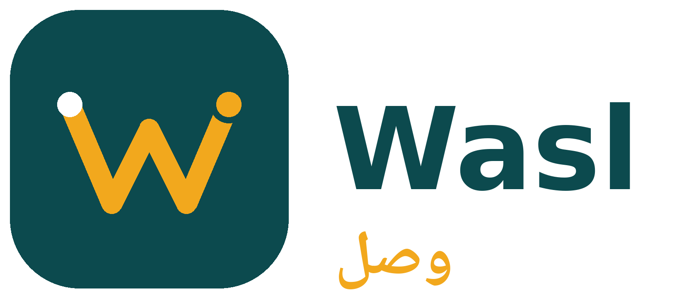
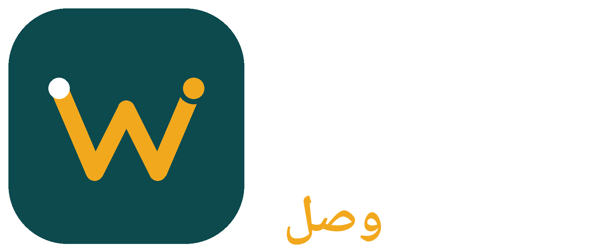
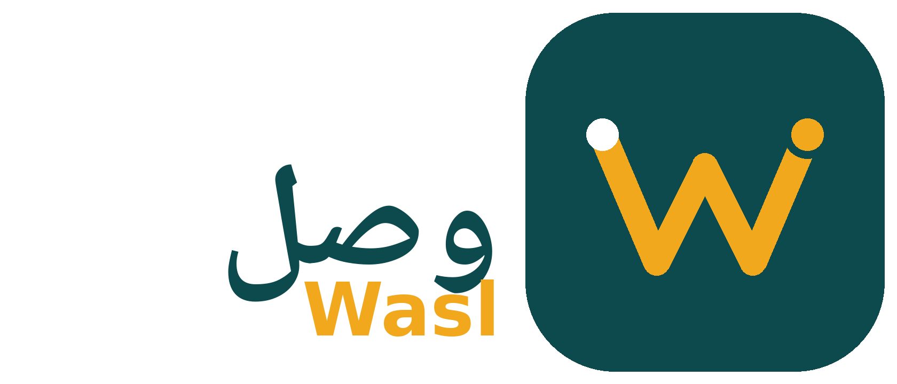
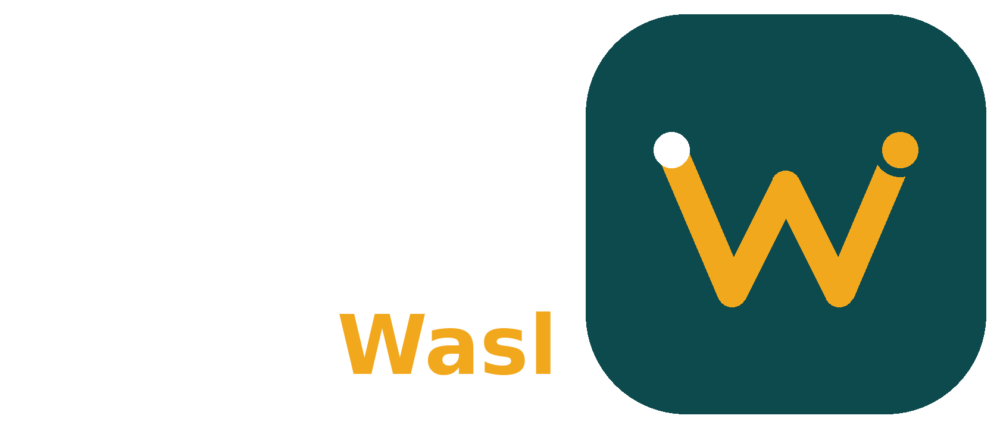
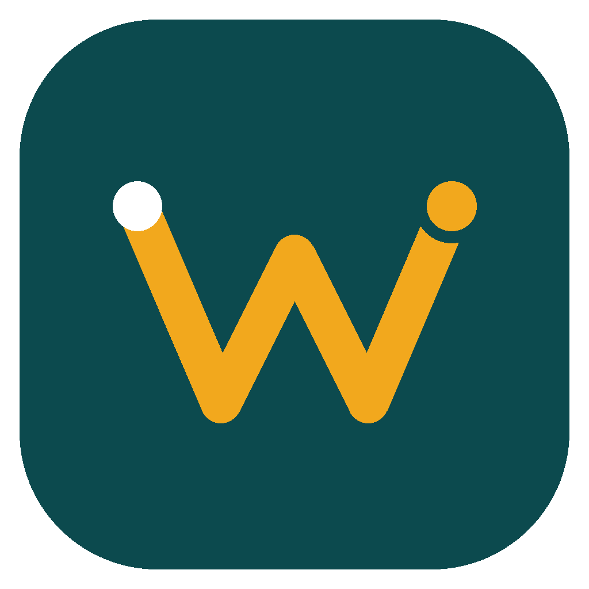
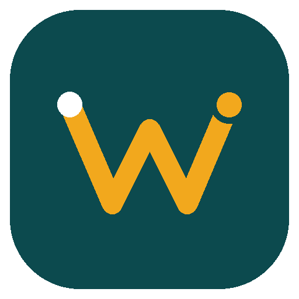

Store delivery — Boston & Morocco · Cash on delivery
One route, from the store to the customer. The W is the road the driver takes.
Where every delivery starts: the restaurant, coffee shop or grocery store.
The road itself, drawn as a W for Wasl. Amber is the cash accent from the app.
Where the route ends: the customer's door, with photo proof.
The icon tile is the app icon. The wordmark pairs it with the name in English, Arabic, or both.




The tile is the launcher icon. 1024 is the Play Store listing size; 512 and 192 are for the app and the web.


Same palette as the prototype: deep teal, amber cash accent. Blue stays reserved for marketplace only.
Sora for Latin (the prototype's type), IBM Plex Sans Arabic for Arabic. Never set the wordmark in another font.
Wasl — Sora Bold
وصل — IBM Plex Sans Arabic
Clear space: keep at least the height of the destination dot empty around the logo on all sides.
Everything lives in wasl-logo/. SVG is the source of truth — scale it to any size. PNG is for stores, phones and documents.
wasl-icon.svgApp icon, vectorwasl-icon-1024.pngPlay Store listingwasl-icon-512.pngApp / webwasl-icon-192.pngSmall iconwasl-wordmark.svgHorizontal lockup, English-firstwasl-wordmark-ar.svgHorizontal lockup, Arabic-firstwasl-wordmark.pngWordmark, light backgroundwasl-wordmark-light.pngWordmark, dark backgroundwasl-wordmark-ar.pngArabic wordmark, light backgroundwasl-wordmark-ar-light.pngArabic wordmark, dark backgroundwasl-mark.svgMark only, light backgroundwasl-mark-light.svgMark only, dark backgroundrender_pngs.pyRe-renders every PNG from the SVG geometry